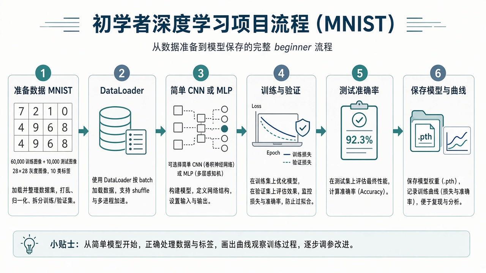

0. 怎么学 · 前置
请先完成 第四章（至少会训练循环与保存 state_dict）。本章会用到 torchvision（装 PyTorch 时通常已带，没有就 pip install torchvision）。
- 一次只改一类东西：先跑通，再提准确率，再美化代码
- 把实验结果记在
NOTES.md：lr、epoch、最终 test acc - AI 可以帮你改报错，但评估数字和结论必须你自己跑出来
建议时间：首次跑通 3–6 小时；含调参与汇报准备约 1–2 天。
1. 选什么项目
- 主线（推荐）：Fashion-MNIST 衣服图像 10 分类。比手写数字稍难一点，但仍适合 CPU。
- 同构替换：MNIST 数字分类（更简单，适合实在跑不动时降级）。
- 加分路线：文本情感二分类（见第 13 节）。概念相同，数据管线不同。
本教程正文按 Fashion-MNIST + 小型 CNN 写。你照着做完即算第五章过关。
2. 项目流水线

- 准备数据（下载、变换、划分 DataLoader）
- 定义模型
- 训练 +（可选）验证，记录 loss/acc
- 在测试集上最终评估
- 保存权重与曲线图，写几句结论
3. 环境与目录
D:\shenji-python\ch05\
train_fashion.py # 主脚本
NOTES.md # 实验记录
outputs\ # 曲线、模型（运行后生成）cd D:\shenji-python
.\.venv\Scripts\Activate.ps1
python -c "import torch, torchvision; print(torch.__version__, torchvision.__version__)"首次运行会自动下载 Fashion-MNIST 到本地缓存目录，需要能访问网络。
4. 认识 Fashion-MNIST
- 灰度图
28×28，10 类：T-shirt、Trouser、Pullover、Dress、Coat、Sandal、Shirt、Sneaker、Bag、Ankle boot - 训练集 6 万，测试集 1 万（库已分好；我们再从训练集划一点做验证）
- 乱猜准确率约 10%；你的模型应明显高于这个数（入门能到 80%+ 往往不难，视训练轮数与模型而定）
别和 ImageNet 比：这是教学数据集。目标是流程正确，不是 SOTA。
5. 数据与 DataLoader
import torch
from torchvision import datasets, transforms
from torch.utils.data import DataLoader, random_split
tfm = transforms.Compose([
transforms.ToTensor(), # [0,1]，shape → (1,28,28)
transforms.Normalize((0.5,), (0.5,)), # 简单归一化
])
train_full = datasets.FashionMNIST(
root="./data", train=True, download=True, transform=tfm
)
test_set = datasets.FashionMNIST(
root="./data", train=False, download=True, transform=tfm
)
# 从训练集划 10% 做验证
n_val = len(train_full) // 10
n_train = len(train_full) - n_val
train_set, val_set = random_split(
train_full, [n_train, n_val],
generator=torch.Generator().manual_seed(0),
)
train_loader = DataLoader(train_set, batch_size=128, shuffle=True)
val_loader = DataLoader(val_set, batch_size=256, shuffle=False)
test_loader = DataLoader(test_set, batch_size=256, shuffle=False)取一个 batch 检查 shape：图像应是 (B, 1, 28, 28)，标签 (B,) 的整数类别。
动手：打印 len(train_set), len(val_set), len(test_set) 与一个 batch 的 shape。
6. 搭建分类模型
用一个很小的 CNN（比纯 MLP 更适合图像，但仍然短）：
import torch.nn as nn
class SmallCNN(nn.Module):
def __init__(self, num_classes=10):
super().__init__()
self.features = nn.Sequential(
nn.Conv2d(1, 16, 3, padding=1),
nn.ReLU(),
nn.MaxPool2d(2), # 28→14
nn.Conv2d(16, 32, 3, padding=1),
nn.ReLU(),
nn.MaxPool2d(2), # 14→7
)
self.classifier = nn.Sequential(
nn.Flatten(),
nn.Linear(32 * 7 * 7, 128),
nn.ReLU(),
nn.Linear(128, num_classes),
)
def forward(self, x):
x = self.features(x)
return self.classifier(x)分类头：最后一层输出 10 维 logits（未过 softmax）。配合 CrossEntropyLoss 使用——它内部会处理 log-softmax。
7. 训练与验证
import torch
import torch.nn as nn
from torch.optim import Adam
device = torch.device("cuda" if torch.cuda.is_available() else "cpu")
model = SmallCNN().to(device)
opt = Adam(model.parameters(), lr=1e-3)
loss_fn = nn.CrossEntropyLoss()
def run_epoch(loader, train=True):
model.train(train)
total_loss, correct, n = 0.0, 0, 0
ctx = torch.enable_grad() if train else torch.no_grad()
with ctx:
for xb, yb in loader:
xb, yb = xb.to(device), yb.to(device)
if train:
opt.zero_grad()
logits = model(xb)
loss = loss_fn(logits, yb)
if train:
loss.backward()
opt.step()
total_loss += loss.item() * len(xb)
pred = logits.argmax(dim=1)
correct += (pred == yb).sum().item()
n += len(xb)
return total_loss / n, correct / n
history = {"train_loss": [], "val_loss": [], "val_acc": []}
for epoch in range(5): # 先 5 轮跑通；有时间再加到 10～15
tr_loss, tr_acc = run_epoch(train_loader, train=True)
va_loss, va_acc = run_epoch(val_loader, train=False)
history["train_loss"].append(tr_loss)
history["val_loss"].append(va_loss)
history["val_acc"].append(va_acc)
print(f"epoch {epoch}: train_loss={tr_loss:.4f} val_acc={va_acc:.3f}")- 同时看 val_acc：比只看 train loss 更能发现过拟合
- CPU 上 5 个 epoch 可能要几分钟到十几分钟，属正常
8. 测试与看错例
test_loss, test_acc = run_epoch(test_loader, train=False)
print("TEST acc =", test_acc)再抽几张预测错的图（可选但强烈建议）：
import matplotlib.pyplot as plt
model.eval()
xb, yb = next(iter(test_loader))
xb, yb = xb.to(device), yb.to(device)
pred = model(xb).argmax(1)
wrong = (pred != yb).nonzero(as_tuple=True)[0][:8]
plt.figure(figsize=(10, 3))
for i, idx in enumerate(wrong):
plt.subplot(1, 8, i + 1)
plt.imshow(xb[idx].cpu().squeeze(), cmap="gray")
plt.title(f"t{yb[idx].item()}/p{pred[idx].item()}")
plt.axis("off")
plt.tight_layout()
plt.savefig("outputs/wrong_examples.png", dpi=150)看错例能帮你理解：Shirt 和 T-shirt 本来就容易混——这是数据难度，不一定是代码写错。
9. 保存产物
from pathlib import Path
Path("outputs").mkdir(exist_ok=True)
torch.save(model.state_dict(), "outputs/fashion_cnn.pt")
plt.figure()
plt.plot(history["train_loss"], label="train_loss")
plt.plot(history["val_loss"], label="val_loss")
plt.legend(); plt.xlabel("epoch"); plt.grid(True)
plt.tight_layout()
plt.savefig("outputs/loss_curve.png", dpi=150)
plt.figure()
plt.plot(history["val_acc"], label="val_acc")
plt.legend(); plt.xlabel("epoch"); plt.grid(True)
plt.tight_layout()
plt.savefig("outputs/acc_curve.png", dpi=150)交作业 / 给老师看时，至少带齐：fashion_cnn.pt、两张曲线、测试准确率数字、几句 NOTES。
10. 完整代码骨架怎么组织
建议把上面各段收进一个 train_fashion.py，顺序固定为：
- import 与随机种子
- 数据
- 模型 / 优化器 / loss
- 训练循环
- 测试 + 存盘 + 画图
第一次允许「一个文件全部堆一起」。跑通后再考虑拆函数。不要一上来就工程化到跑不动。
完成 0 / 5 步
11. 调参小实验（至少做 1 组对照）
固定其他条件，只改一项，记两行对比：
- 学习率
1e-3vs1e-4 - 或 epoch
5vs12 - 或 batch_size
64vs256
在 NOTES 写：改了什么、test_acc 从多少到多少、曲线有何变化。这比盲目堆层数更有训练价值。
12. 三分钟汇报模板
- 任务：Fashion-MNIST 10 类图像分类
- 方法：小型 CNN + CrossEntropy + Adam，数据做了 ToTensor/Normalize，从训练划验证
- 结果：test_acc = ____；曲线见 outputs；错例主要混在 ____
- 对照实验：改了 ____，结果 ____
- 不足与下一步：例如更多 epoch、数据增强、更强模型……
口语练习：不看稿讲一遍；讲不清的那句，回去对着代码再看。
13. 文本分类备选（加分）
若你更想做文本，思路对照如下（不必与图像线同时做）：
- 数据：如 IMDb 情感、或课程提供的 CSV（文本 + 0/1 标签）
- 把句子变成数字：词表编号 / 简单 bag-of-words / 用现成 embedding（进阶）
- 模型：
Embedding + 平均池化 + Linear，或小型 LSTM/TextCNN - loss 仍可用
CrossEntropyLoss或二分类 BCE - 评估：准确率 + 若干错误句子案例
文本线环境与预处理坑更多。基础不稳时优先完成图像主线再挑战。
14. 常见翻车
- 下载失败 → 换网络 / 镜像，或手动把数据放到
./data - 准确率一直 ~0.1 → 查标签是否进了 CrossEntropy、模型是否真的在
train()、有没有写反 pred/target - loss 变 NaN → 降学习率、查输入是否 Normalize 过头或数据损坏
- 极慢 → 减小打印频率；确认没在每步
savefig；batch 调大一点（内存允许时） - 只报 train 分、不测 test → 项目不算完成
过关自检
完成 0 / 10 项
五项主线章节至此收束。接下来可回头用 Cursor / Codex 在自己的课题数据上复用同一流水线。
用 AI 做项目（Cursor / Codex）
我在做深基课第五章 Fashion-MNIST 小项目。
环境：Windows，torch ____，cuda=____。
请不要一次性重写整个项目；按我指定的文件段修改。
当前卡点：____
相关代码（函数级）：
（粘贴）
报错或现象：
（粘贴 / 描述 val_acc、test_acc）
请：1）先判断是数据、模型、训练循环还是评估问题；
2）给最小补丁；3）告诉我改完后应打印哪些 shape/指标来验收。